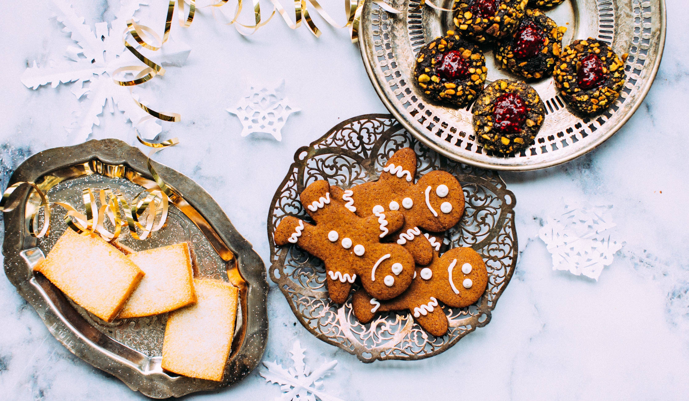

trail mix cookies
Trail Mix is satisfying on its own, but mixed into cookies, it becomes a snacking delight. These cookies are healthy enough for breakfast, but tasty enough for anytime of the day. They’re also perfect for the vegans in your life and use chia seeds as an egg substitute!
ingredients
- 1 cup rolled oats (gluten free)
- ½ cup quinoa flour (or other whole grain flour, gluten-free if needed)
- ¼ cup psyllium husk
- 1 tsp ground cinnamon
- ½ tsp baking soda
- ½ tsp baking powder
- ¼ tsp salt
- 2 tbsp chia seeds (mixed with 6 tbsp water to make “chia eggs”)
- ¼ cup almond butter or peanut butter (natural and unsalted)
- ¼ cup maple syrup
- ¼ cup coconut oil, melted
- 1 tsp pure vanilla extract
- 1 ½ cups homemade trail mix (see link to recipe above)
preparation
Make your chia eggs by mixing the chia seeds and water in a small bowl. Set aside for about 5 minutes.
Preheat your oven to 350°F.
Mix your dry ingredients together in a large bowl. In a separate medium bowl, mix the wet ingredients together. Pour wet bowl into the dry ingredients and stir together until combined. Add in your homemade trail mix and stir to combine. Line a baking sheet with parchment paper. Using your hands, form ¼ cup sized balls and space evenly on the baking sheet. You should get 12 balls. Flatten with a fork.
Bake for 10 minutes or until the chocolate chips are have melted and the cookies are golden brown.
Move the cookies to a cooling rack or space them out on a plate or platter. Enjoy!
Servings: Makes 12 cookies